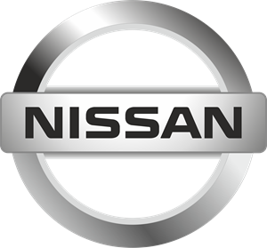
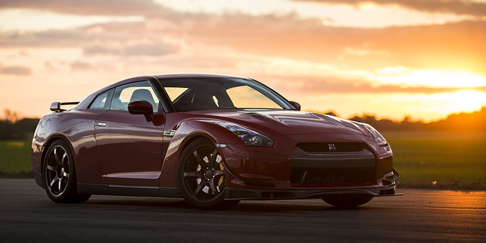

|  |  | |
| Nissan Motor Co., Ltd. (яп. 日産自動車株式会社, ніссан дзідо: ся кабусікігайся) — японська автомобільна компанія, одна з найбільших у світі. Компанія заснована в 1933 році. Штаб-квартира до 2010 року була в Токіо, потім перенесли в Йокогаму. | ||
| 2012 року Nissan займала 6-те (8 у 2010) місце в світі за кількістю вироблений авто після Toyota, General Motors, Volkswagen Group, Hyundai Motor Group та Ford. Разом, Renault-Nissan займають четверте місце у світі. Nissan — найбільший японський виробник в Китаї, Росії та Мексиці. 2018 року компанія заявила про поступове повне припинення продажу своїх дизельних автомобілів в Європі. 44,4% акцій компанії належать французькій компанії Renault S.A.. Президент і старший виконавчий директор — Карлос Гон. | ||